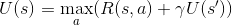
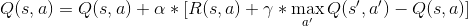
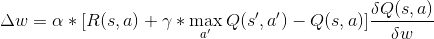

Q-learning
Theory
One of the most basic forms of reinforcement learning we can implement is Q-learning. In an environment where there is a limited amount of possible states and actions, we assign a q-value to each possible state-action combination and store these values in a q-table. The q-values express how 'good' a certain action is in a certain state. The optimal action to perform in a state is then the one with the highest q-value. All a rational agent then has to do is to iteratively look up and perform the optimal action given his current state.
But how do we find these q-values? Intuitively, we can reason that the utility of performing an action a in a state s is linked to the immediate reward of performing that action and the utility of the resulting state s'. It is also reasonable to assign less utility to the future rewards than to the immediate reward. To express this temporal value we multiply the future rewards with a discount factor γ valued between 0 and 1. Finally, if we assume our agent always selects the best action in any given state, we get the resulting Bellman equation:
We can use the q-values stored in our table to perform this equation. However, we don't want to drastically change our q-values every time we visit an action-state pair. Instead, we want them to gradually evolve towards the optimal values. To do this we introduce another hyperparameter α, the learning rate. An update of a q-value for a state s and action a is then expressed as:

Practice
The challenge...
The environment I chose to implement Q-learning on is the Taxi-v3 (github) environment from the gym toolkit. The state space consists of a 5x5 grid with 4 locations that can either be a passenger waiting location or a drop-off point. A passenger can either be on one of the 4 points, or inside the taxi. This brings us to a total of 500=5x5x4x(4+1) possible states. The agent can choose between 6 actions: pickup, dropoff, south, north, east, west. At each timestep, the agent's score decreases by 1, forcing the agent to act promptly. A successful delivery of the passenger is reward with +20 points. An illegal attempt of the pickup or dropoff action is penalized with -10 points. The environment ends when the passenger is successfully dropped off.
The Solution... (github)
We first initialize a q-table of 6 rows by 500 columns that defines for each state how useful each action is. Since we have no clue how useful each action is, we just initialize all values to 1. This means, we will first need to explore our environment a bit, before our agent can create the optimal policy. To do this, we define an exploration rate that is initially set to 1 and steadily decreases to a small value such as 0.1. This value defines the percentage of time the agent will take a random value, versus the percentage of time it will take the optimal value (calculated based on the current states of its q-table). Finally, a learning rate of 0.1 and a discount factor of 0.6 are chosen and we simply let the agent train during a large number of iterations (for example 100k iterations). This way we ensure the agent will pass every state at least a couple of times and update the q-values accordingly.
Deep Q-Network
Theory
Q-learning is all good and well, but what if the state space is continuous or what if we want to be able to generalize over state-action pairs that we haven't encountered yet. In that case we want to create a function that takes a state as input and returns q-values for all the possible actions. This function can be modelled as a deep neural network, hence the name Deep Q-Network, DQN. The question remains: How do we link the update of the network weights to the Bellman equation. We can take the derivative of the Bellman equation with respect to the weights and use this as a loss function.
 To increase the training efficiency, we train the network in batches, doing all calculations of q-values on a set of examples, and then using those examples and there corresponding q-values to update the weights of the network. In order to reduce the correlation between the examples in each batch we implement an experience memory buffer that stores all the agent's experiences. Every time we want to train a batch, we randomly select a set of experiences from this memory.
Practice
The challenge...
The CartPole-v0 (github) environment describes its state space with four continuous values: cart position, cart velocity, pole angle and pole velocity at tip. The CartPole environment has an extremely complex set of possible actions: right and left. As such, we want to create a function that takes 4 continuous outputs and tells our agent whether to go right or left. The environment gives a reward of +1 for every step taken, even if it is the final step.
The solution... (github)
The first thing to do, is to create a neural network structure. We know we have a 4 node input and we can create a 2 node input, where we simply select the node with the highest output. In between these we create two 24 node layers (with a ReLu activation). Since our output layers use a simple linear activation function, we use a mean squared error loss function. Next, we need to implement our memory buffer. To do this, we create a deque with a max length of say... 1 million examples. We choose a batch size of 32 and in the same manner as with the Taxi-v3 environment, we start with an exploration rate of 1 that decays over time to 0.001. To improve the reward system, we change the reward for the last step (the step before dying) to be -1.
Double DQN
Theory
DQN tends to overestimate the q-values of actions in certain conditions. In and of itself, an equal overestimation of the q-values of all actions in a state is not harmful since the resulting policy will still be the same. However, when the overestimation is not equally distributed, it can result in a suboptimal policy. This was shown to be the case in the atari environments, and as a solution, the authors of the paper suggest to add a second network that will be used in the update function to perform the predict of future utilities. Once in a while during training, the weights of both models (the training and target model) are synced. It has been shown that the resulting policy is better than when we use a single model
Practice
The challenge...
The atari environments simply define their states by the RGB values of each pixel on the screen. As such, the Breakout (github) environment has a state space of 210x160x3 continuous values between 0 and 255. The possible actions are left, right, fire and noop (do nothing).
The solution... (github)
Instead of using the full state space as the input of our convolutional neural network, we first do some preprocessing. The first thing we do is resize the image to 84x84 pixels and grayscale it. This drastically reduces the complexity of the input spaces (speeding up the training process) whilst still retaining sufficient information to be solvable. We wrap the gym environment with an observation wrapper to apply this preprocessing every time a step is taken in the environment. We also stack our frames together 4 by 4, in order to have somewhat more information (such as direction, velocity and acceleration) in our input space. Thus, our input shape is 84x84x4 and the network outputs a value for each of the 4 possible actions. The network we use is fairly simple: it has a single convolutional layers with 3 convolutional nodes that filter the input space. The output of these 3 nodes is used as input for 1 regular (Dense) layer of 512 nodes, which is fed into the output layer determining the action.